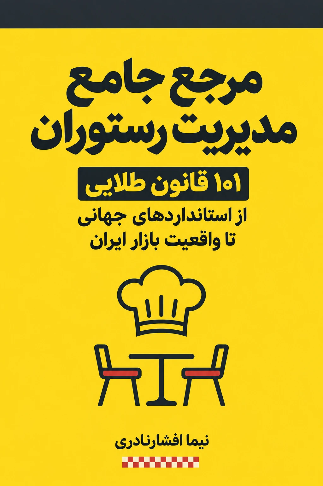

یک راهنمای عملی برای رستورانداری
غذای خوب،
شروع ماجراست
رستوران خوب را با مدیریت خوب میسازیم.
از انتخاب ملک و قیمتگذاری منو تا مدیریت تیم و تجربهٔ مشتری؛ ۱۰۱ قانون برای اینکه کسبوکارتان را دقیقتر ببینید و بهتر اداره کنید.

این کتاب برای شماست اگر…
هر روز درگیر
رستورانید
مالک یا مدیر هستید
فروش دارید، اما میخواهید هزینهها، تیم و عملیات را با عدد و روش روشنتری مدیریت کنید.
در فکر راهاندازی هستید
میخواهید پیش از اجارهٔ ملک، خرید تجهیزات و بستن منو، تصویر کاملتری از کار داشته باشید.
در این صنعت کار میکنید
در رستوران، کافه یا فستفود کار میکنید و میخواهید منطق کسبوکار پشتِ سرویس را بهتر بفهمید.
داخل کتاب چه میخوانید؟
از روزِ اول،
تا آخرِ شیفت
هفت فصل، ۱۰۱ قانون و چهار چکلیست اجرایی. مسیرتان را انتخاب کنید و از همان مسئلهای شروع کنید که امروز با آن روبهرو هستید.
برای کارِ واقعی
- ۰۱۱—۱۵
قبل از اینکه در را باز کنید
امکانسنجی، مدل کسبوکار و انتخاب ملک
- ۰۲۱۶—۳۰
حسابوکتاب رستوران
اقتصاد رستوران، هزینهها و مدیریت مالی
- ۰۳۳۱—۴۵
منویی که حساب دارد
مهندسی منو، استانداردسازی رسپی و قیمتگذاری
- ۰۴۴۶—۶۰
پشتِ صحنهٔ یک سرویس خوب
آشپزخانه، تدارکات، انبارداری و بهداشت
- ۰۵۶۱—۷۵
تیمی که کار را جلو میبرد
منابع انسانی، استخدام و عملیات سالن
- ۰۶۷۶—۹۰
از سفارش تا دوباره برگشتن
تجربهٔ مشتری، بازاریابی و دلیوری
- ۰۷۹۱—۱۰۱
آماده برای روزهای سخت
ایمنی، مجوزها، مدیریت بحران و استراتژی
سفارش کتاب
کتابهای تخصصی نیما داینر
برای آشنایی با کتابها و ثبت سفارش به کتابخانه یا تلگرام مراجعه کنید.
راه سفارش کتابها ←پرسشهای متداول
درباره کتابها
چطور کتاب سفارش بدهم؟
از طریق تلگرام نیما افشارنادری پیام بدهید.